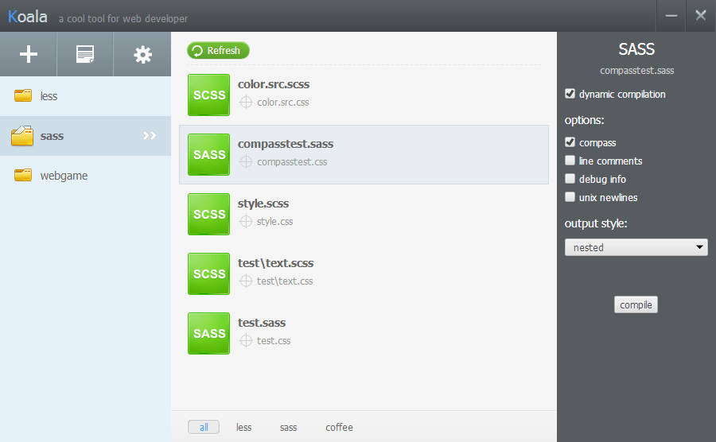
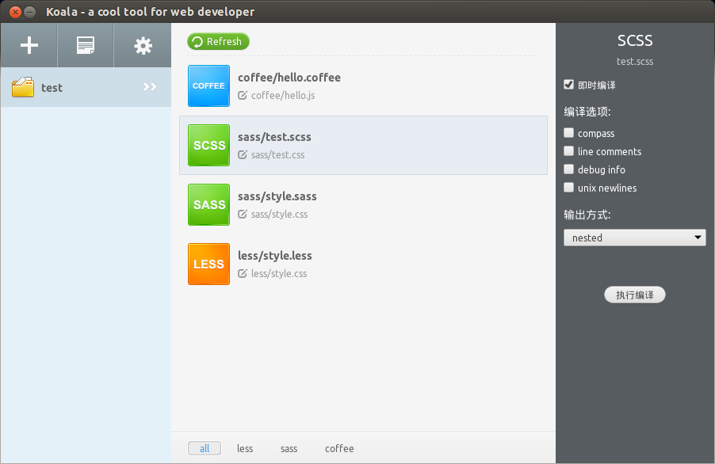
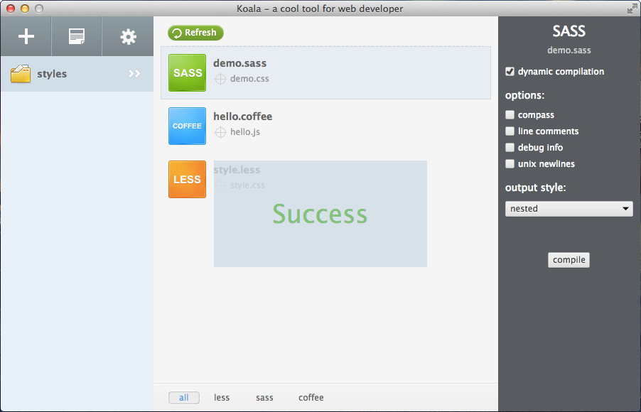

Koala is a GUI application for less, sass and coffeescript compilation, to help web developers to use less,sass and coffeescript development more efficient.
Download
v1.0.0 release
- Linux: 32bit / 64bit
- Windows
- Mac, 10.7+
Ubuntu user can install koala width debian package file.
32bit: koala_1.0.0_i386.deb
64bit: koala_1.0.0_amd64.deb
Features
- Multi-language Support: support for less,sass, coffeescript and compass framework.
- Real-time Compilation: listening files, compile automatically when the file changes, that everything is running in the background without user action.
- Compile Options Support: you can set the compiler options for each file.
- Compression: auto compress code after compilation is completed.
- Error Notification: if encountered an error during compilation, koala will pop up the error message.
- Cross-platform: koal can run perfectly under windows, linux and mac.
Installation Guide
The sass compiled function need system has been installed ruby. If you’re using OS X, you’ll already have Ruby installed. Windows users can install Ruby via the Windows installer, and Linux users can install it via their package manager.
How to use
- Dragging & dropping your project folder into the window directly or Click the "+" icon in the upper left corner to select a folder ;click right mouse button in the project element, support more operations.
- Write code with you favorite editor.
- Done! The code has been automatically compiles.
FAQ
-
How to change css & js file output folder?
Click on the output path next to the icon , Or right-click on the file element, select "Change Output Path" menu.
-
How to set compile options?
Select the target file, and set options in the expanded panel on the right. Click on the "compile" button will execute compilation immediately.
-
How to set the default compile options?
Open the program Settings panel, the default compile options can be set inside, and take effect immediately. The files added later will be using the default settings.
-
How to filter the files specified in the rules?
In the "filter file" option in the Settings panel to set rules, support multiple rules, Split width Comma ",".
Example: *.src.less,*.lib.coffee . Add files, all in ".src.less" or ".lib.coffee" at the end of the file is not added. -
How to switch between Chinese/English interface?
Select language option in the Settings panel, it will take effect after application restart.
Screenshot
Linux

Mac

Support
In case you encounter an issue, you can open a ticket on Github. Also feature requests can be entered here: Github issue tracker
Or, you can send e-mail to author: lain.z.q@gmail.com
google group: koala-app
Author
Ethan Lai, web developer, blog: http://oklai.name
Max Deng, interaction designer, blog: http://weibo.com/cooldz
Leott Liu, visual designer, blog: http://t.qq.com/se7en860313